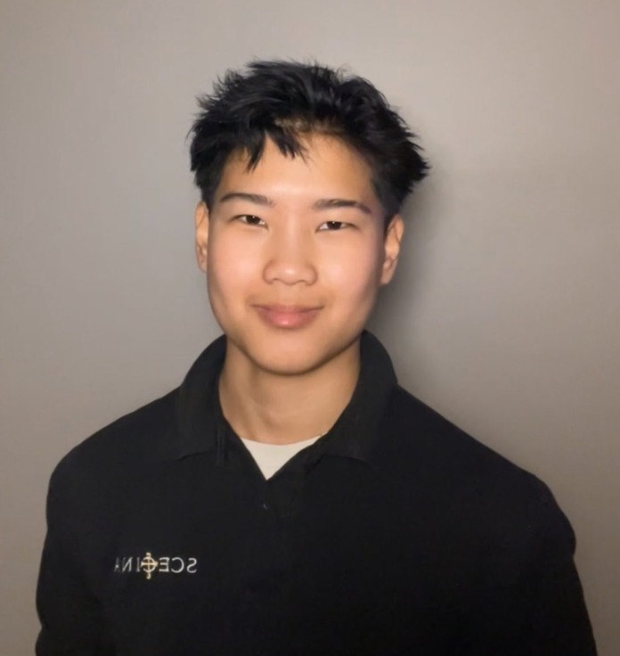

A LITTLE ABOUT ME
MORE THAN
ONE DISCIPLINE.

CURIOUS BY
NATURE.
I like when a difficult concept stops being just a diagram and starts working in real life.
I study electrical engineering at Purdue University Indianapolis while pursuing music at Butler. I enjoy hardware design, team projects, performance, and detailed hands-on model building.
I've assembled Metal Earth models since I was eleven. It's one of the earliest ways I learned to enjoy patient, precise work with my hands.